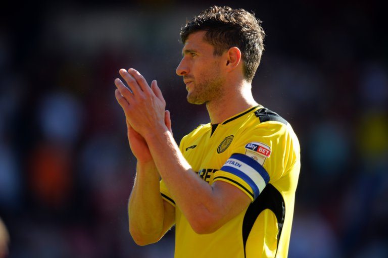

With their famous win at Huddersfield on Saturday Burton Albion have move up to 19th (6th bottom) place in the league table and 4 points above safety and very a good chance of staying in the Championship for next season, which would be great for the club and their fans.
Albion have a very good manager in Nigel Cough and they gave us everything we could handle in the away game when we narrowly won 2-1 on 17th December – so this team will not be taken lightly. [read more...]